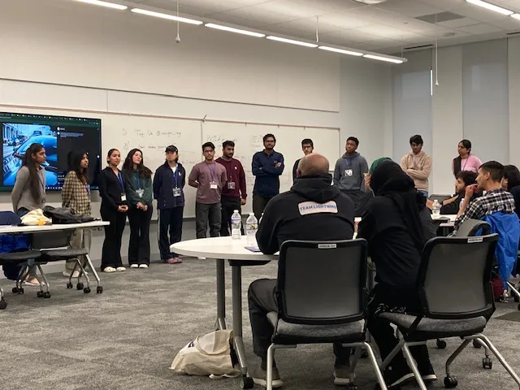
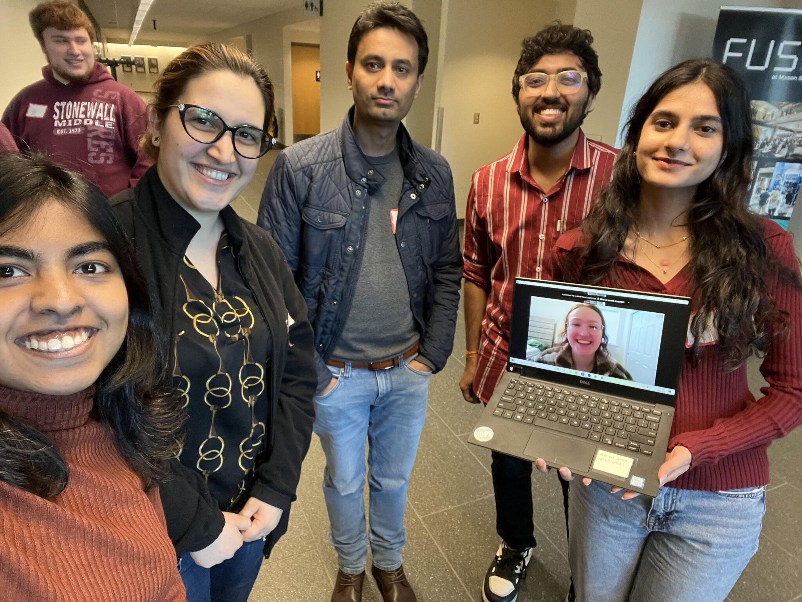

Activities

DataStorm: Riding the Wave of Legislative Change
Contributed to modernizing justice funding project by scraping legislative data from 17 states and developing scripts for automating and tracking legislative data to improve data transparency and analysis.
Nov 2024

Ideathon: Misinformation and Disinformation
Our business idea was inspired by leveraging the concept of nutrition labels on food products to rate online content on ideological orientation, polarity, emotional intensity, and bias, promoting transparency without censorship.
Apr 2024